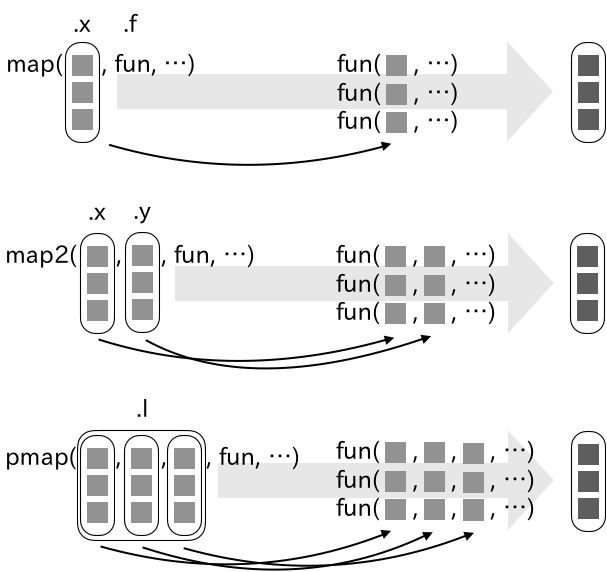

names(trees) # データフレームの変数名 (列名)を取得する[1] "Girth" "Height" "Volume"class(trees$Girth) # 変数Girthの値をベクトル形式で参照する[1] "numeric"class(trees$Height) [1] "numeric"class(trees$Volume)[1] "numeric"この章では、効率的にデータを処理・操作する方法を学ぶ。ここでの効率的、とは、コード内での繰り返しの記述を減らしたり、見通しの良い記述での実行を意味している。また対象として単なる繰り返しだけでなくグループごとに同じ処理を適用することも含んでいる。これらの技法を学ぶことは、データの前処理だけでなく統計解析、モデリングの関数や可視化を行うために役立ち、十分に投資する価値のあるものである。
一つの状況を考えてみよう。データフレームの変数が、数値を格納するか、文字列であるのかは、Rの処理を行う上で意識しておきたい事項である。今、手持ちのデータフレームについて、各変数のデータ型が不明であるとき、どのように確認すれば良いだろう。ここではオブジェクトのクラスを確認するため、names()でデータフレームに含まれる変数の名前を確認した後、各変数への参照をclass()で表示する方法を示す。
names(trees) # データフレームの変数名 (列名)を取得する[1] "Girth" "Height" "Volume"class(trees$Girth) # 変数Girthの値をベクトル形式で参照する[1] "numeric"class(trees$Height) [1] "numeric"class(trees$Volume)[1] "numeric"もう一つ、データフレームの列数を確認した後に[で値を参照する方法は以下のようになる。
class(trees[, 1])[1] "numeric"class(trees[, 2])[1] "numeric"class(trees[, 3])[1] "numeric"目的は達成できたが、一方でデータフレームの中身が同一であっても変数名が異なっていたり、同じ変数が大量にあるデータフレームで同じことを行う場合はどうだろうか。これらの方法は確実ではあるが、変化やコードへ記述する内容が増えてしまうという欠点がある。変化がある度に内容を書き換えたり、同じ内容の記述を行うと、どこかで入力間違いが発生するリスクも高まる。これから示すpurrrによる処理は、これらの欠点を解消するのに有効な手法となる。
Rの標準関数にはapply()やsapply()など、関数を引数にもつ高階関数 (汎関数)がある。これらのapply族と呼ばれる関数は、繰り返し行われる処理を効率的に行うために利用される。例えばこれをデータフレームの各変数に実行する場合、次のコードを実行すれば良い。
# apply族関数を用いてtreesの変数のデータ型を確認
apply(X = trees, MARGIN = 2, FUN = class) Girth Height Volume
"numeric" "numeric" "numeric" lapply(X = trees, FUN = class)$Girth
[1] "numeric"
$Height
[1] "numeric"
$Volume
[1] "numeric"いずれの関数も対象のデータをXで指定し、データに適用する関数をFUNで与えている。またapply()の中で利用している**MARGINは関数の適用する方向を示しており、2は列の指定を示している。FUN*には関数の名前が使われるが、文字列と区別するために引用符は用いられない。一方で+や%*%などの演算子を与える場合には演算子の名前を引用符あるいはバッククオート(“`”)で囲む。これは$や[演算子を使った参照をデータフレームの各変数に適用するよりも効率的である。特に変数の多いデータではapply族関数が効果的である。
tidyverseに含まれるpurrrrパッケージは、こうしたapply族関数と同機能をもつ関数map()をはじめとして、効率的にRオブジェクトを扱うための関数を提供する。またpurrrrで扱うmap()をはじめとした関数は、apply族関数よりも実行の仕方や返り値のデータ型についてわかりやすくなっている。加えてパイプ処理やdplyr、ggplot2といった他のtidyverseで利用されるパッケージとも相性が良い。purrrの関数mapで先の処理を実行すると次のようになる。
library(purrr) # purrrはtidyverseに含まれる
map(.x = trees, .f = class)$Girth
[1] "numeric"
$Height
[1] "numeric"
$Volume
[1] "numeric"# purrrはtidyverseに含まれており、
# 第一引数に対象のオブジェクトを受け取るため
# パイプ処理が適用しやすい
trees %>%
map(class)$Girth
[1] "numeric"
$Height
[1] "numeric"
$Volume
[1] "numeric"これはlapply(trees, class)の結果と同じで、返り値は3つの要素からなるリストとなっている。map()はpurrrの基礎となる関数である。map()は引数.xに与えられた各要素に対して、.fで指定された関数を適用し、入力と同じ長さのベクトルを返却する関数である。
map()の第二引数の.fには、次のように、無名関数も指定可能であるが、~を用いることで関数定義を短縮して記述することも可能である。すなわち以下のコードは全て同様の結果を導く。
1:3 %>%
map(rnorm, n = 3)
# 無名関数を定義して与えても良い
1:3 %>%
map(function(x) rnorm(3, x))
# ~ は function(x)を省略した記述となる
1:3 %>%
map(~ rnorm(3, .))無名関数を定義する場合、その第一引数にデータを指定する。~はfunction(x)の省略型であり、ラムダ式として無名関数を表現できる。その際はデータを”.”または”.x”、“..1”で示す。数字を使う場合、ドットが2回続くのに注意である。“.x”や”..1”といった表現は、与えられる引数の位置を把握するのに優れ、次に述べる、複数の入力を元に処理を適用する場合にさらに便利である。
またmap()では、添字を使った位置や名前による要素の指定も行える。ここでは引数に対象の要素の位置を指定するか、名前を与えて実行すれば良い。これは特にリストを扱う上で効果的である。
(x <- list(list(id = 1,
name = "hoxom"),
list(id = 2,
name = "uribo",
age = 28)))[[1]]
[[1]]$id
[1] 1
[[1]]$name
[1] "hoxom"
[[2]]
[[2]]$id
[1] 2
[[2]]$name
[1] "uribo"
[[2]]$age
[1] 28ここでxはid、name、ageの3つの名前をもつリストである。リストにはさらに2つのリストが含まれている。ここからxの各要素を参照するための処理は次のようになる。
# 各リスト中の第一の要素を参照する
x %>%
map(1)[[1]]
[1] 1
[[2]]
[1] 2# リスト中のnameの値を参照する
x %>%
map("name")[[1]]
[1] "hoxom"
[[2]]
[1] "uribo"# 返却する要素が無い場合は NULLが与えられる
# NULLは引数.defaultの指定により変更可能
x %>%
map("age")[[1]]
NULL
[[2]]
[1] 28x %>%
map("age", .default = NA)[[1]]
[1] NA
[[2]]
[1] 28map()の返り値がリストになることは上記のコードで示した通りだが、map_*()を使ってベクトルとして得ることもできる(表XX)。map_*()には、返り値のベクトルのデータ型を定義するもので、それは、map_*()の接尾辞によって決まる。例えば文字列として出力する場合にはmap_chr()、整数値であるならばmap_int()という具合である。もちろん、ここでもベクトル内部でのデータ型の混在は許されず、不可逆的なデータ型への変換は行えない。
map_*()の例として、長さ(文字数)の異なる3つの文字列を用意し、その長さを数えてみよう。ここでは文字列の長さを数える関数としてnchar()を適用する。nchar()の返り値は整数であり、ベクトルとして出力するためにmap_int()が利用できる。また
x <- c("こんにちは", "Hello", "您好")
x %>%
map(nchar)[[1]]
[1] 5
[[2]]
[1] 5
[[3]]
[1] 2x %>%
map_int(nchar)[1] 5 5 2次に関数greplを用いて、Hで始まる要素の有無を確認してみる。map()は適用する関数の引数を関数内部で指定可能な高階関数であるので、次のようにgrepl()の引数patternをmap()の引数として指定する。これはgrepl(x[1], pattern = "^H"")、grepl(x[2], pattern = "^H"")、そしてgrepl(x[3], pattern = "^H"")の処理を実行して得る結果に等しい。
x %>%
map_lgl(grepl, pattern = "^H")[1] FALSE TRUE FALSE| 関数 | 返り値 |
|---|---|
map_lgl() |
論理値 |
map_chr() |
文字列 |
map_int() |
整数 |
map_dbl() |
実数 |
ベクトルの他、データフレームを返却するmap_dfc()、map_dfr()も利用できる。これらは処理結果をデータフレームの列および行方向に結合した結果を返す。
以下の例はmtcarsのclyごとにデータを分割し、その後、分割された各データにdispの平均値を算出し、平均値をmap_dfc()によりデータフレームの横方向に結合する、というものになる。
mtcars %>%
# splitはRで標準的に利用可能な関数
# 与えられた要素ごとにデータを分割する
split(.$cyl) %>%
map_dfc(~ mean(.$disp))# A tibble: 1 × 3
`4` `6` `8`
<dbl> <dbl> <dbl>
1 105. 183. 353.
map()にはmap_int()をはじめとして多数の派生した関数がある。これらは処理を適用する要素を制限したり、複数の入力を関数に与えることを可能にする。また、出力を伴わない処理を実行する関数も備わっている。
map()では与えられた全ての要素に関数を適用をするが、map_if()やmap_at()を使うことで条件や位置を元に適用箇所を制限することができる。2つの関数はそれぞれ.p、.atをもち、そこに適用する要素の条件およびその位置を指定する。なお、これらの関数の返り値は、共通のデータ型である場合でも常にリストとなる。
3つの要素からなる文字列ベクトルにnchar()を実行し、各文字数を数えるが、ここで条件を定義して適用する要素を制限するというコードは次のように記述する。
x[1] "こんにちは" "Hello" "您好" # xの各要素でアルファベットを含むものを対象に
# nchar()を適用する
x %>%
map_if(.p = grepl("[a-z]", .), nchar)[[1]]
[1] "こんにちは"
[[2]]
[1] 5
[[3]]
[1] "您好"# パイプ処理を用いない場合、 データの指定を次のようにする必要がある
# map_if(x, .p = ~ grepl("[a-z]", .x), nchar)ここでは引数.pが条件として与えられる処理になる。条件には、関数greplにより、対象がアルファベッドに含まれる文字列であるものを指定した。grepl()の中で”.”で示されるのはパイプ処理によって代名詞として利用可能な”x”を示している。条件に当てはまらない要素では、関数は適用されず、元の値が返却される。
条件の代わりに要素の位置を基準として処理を施すには、関数map_atの引数.atでその要素の位置を指定する。下記の例では2、3番目の要素にnchar()が実行された結果が出力される。
# xの要素から、2、3番目のものに対して
# nchar()を実行
x %>%
map_at(.at = c(2, 3), nchar)[[1]]
[1] "こんにちは"
[[2]]
[1] 5
[[3]]
[1] 2map()では、指定した関数に与えることができるデータは一つであるが、複数のデータや異なる引数の値を関数に引き渡したい時にはmap()の派生であるmap2関数群を利用する。例えばmap2()は、map()の.x、.f引数に加えて.yをもち、ここでデータを指定できる。長さが等しい2つの文字列を入力に用いてpaste()を実行する例を示す。長さの異なるデータを与えた場合にはエラーとなる。
map2(
.x = c("Uryu", "Ishida"),
.y = c("Shinya", "Motohiro"),
# paste()は引数に与えられた値を文字列として結合する
.f = paste
)[[1]]
[1] "Uryu Shinya"
[[2]]
[1] "Ishida Motohiro"# .xには3つの要素が与えれるが.yは要素が2つしかない。
# 要素の数が.xと.yで一致しない場合、処理は停止される
map2(
.x = c("Uryu", "Ishida", "Makiyama"),
.y = c("Shinya", "Motohiro"),
.f = paste
)
# Error: `.x` (3) and `.y` (2) are different lengthsmap2()で指定した引数は既定では、.fの関数の第一引数(.x)と第二引数(.y)に与えられる。ラムダ式を用いる場合、.yのデータは”.y”あるいは”..2”を関数内で明示的に示す必要がある。ここで”.y”が使われているのは、第一引数の”.x”、“..1”と区分するためである。
# 以下の結果は等しい
map2(
.x = c("Uryu", "Ishida"),
.y = c("Shinya", "Motohiro"),
# 無名関数の引数には.x, .yで与えられたデータが引き渡される
.f = function(x, y) paste(x, y)
)
map2(
.x = c("Uryu", "Ishida"),
.y = c("Shinya", "Motohiro"),
.f = ~ paste(.x, .y)
)
map2(
.x = c("Uryu", "Ishida"),
.y = c("Shinya", "Motohiro"),
.f = ~ paste(..1, ..2)
)map2()の利用方法として、次の例のようにデータ以外に引数の値を変更するのに使うこともできる。この例では、round()の引数digitsに異なる値を与えている。
map2(c(1, 2.1, 0.332),
c(1, 0, 2),
~ round(.x, digits = .y))[[1]]
[1] 1
[[2]]
[1] 2
[[3]]
[1] 0.332つ以上のデータを入力に用いる際、map3()、map4()といった具合に関数名の数値の部分を増やせば良い、という話ではない。2つ以上のデータを指定するにはpmap()を利用することになる。ラムダ式では”..3”、“..4”と添字を増やしていくことで多数の引数の値を受け取ることができる。
x <- list(a = list(1:3),
b = list(4:6),
c = list(7:9))
# .lで指定した要素は、順次.fの引数に渡される
pmap(.l = x,
.f = sum)[[1]]
[1] 45x %>% pmap(
~ ..1 + ..2 - ..3
)[[1]]
[1] -2 -1 0pmap()に与えるデータの数よりも関数の引数が少ない場合はエラーになるが、引数…を含んでいる場合や…を引数にもった無名関数として定義することで処理を実行することができる。
sum_xy <- function(a, b) {
a + b
}x %>% pmap(sum_xy)
# Error in .f(.l[[c(1L, 1L)]], .l[[c(2L, 1L)]], .l[[c(3L, 1L)]], ...) :
# unused argument (.l[[c(3, 1)]])# 引数に ... を含んだ関数では、
# .lで指定される余分な要素に対しても処理は実行される
sum_xy2 <- function(a, b, ...) {
a + b
}
# x[[1]]とx[[2]] の値が使われ、x[[3]]については利用されない
x %>%
pmap(sum_xy2)[[1]]
[1] 5 7 9x %>%
pmap(function(...) sum_xy(..1, ..2))[[1]]
[1] 5 7 9x %>%
pmap(function(a, b, ...) a + b)[[1]]
[1] 5 7 9Rの関数は...引数をもつものが多いが、...引数を定義しない関数を実行する場合には、関数をラップし、...引数をもった自作の関数を定義すると良いだろう。
map2()、pmap()はいずれも返り値をベクトル化するmap2_int()のような関数が用意されている。ここで指定可能なデータ型と関数名は、先に説明したmap_*()と対応する。